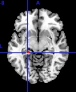

Language Learning
Hippocampus Activation During Language Learning
For the MSc in Cognitive Neuroscience program at the University of York, I chose to study how sleep affects word learning, for my Empirical Project. At the time, I was more interested in sleep research than the language aspect of the study, but after some background reading, I began to realize how interesting this area of study is. What is particularly fascinating to me is that in the past we could only measure behavioral activity, but now we can directly monitor what is happening during the brain when someone is learning new words. For instance, in the picture above, you can see activation of the hippocampus, which is associated with the initial stages of vocabulary acquisition (with activity highest early in training: Gluck, Myers & Meeter, 2005). I would like to share with you what I learned and also point you to some further reading, should you be interested.
All of the words that humans know in adulthood were once unfamiliar to them. New word learning involves a process called lexicalisation, in which novel words become part of a person’s mental lexicon. In order to understand the fundamental procedure of word learning, many studies have examined the type of memory trace that has been created and whether the information has been stored in long-term memory. One way in which researchers can closely follow what happens during language acquisition is to introduce nonwords (made up words) to subjects and study the mental processing that occurs when they are learnt and become wordlike, with an associated meaning and memory trace.
A vast amount of literature links sleep with memory and learning. For instance, people who show the greatest increase in the level of REM sleep show the greatest increase in skill in Morse code (Mandai, Guerrien, Sockeel, Dujardin, & Leconte, 1989).
In another example, Fenn, Nusbaum and Margoliash (2003) had their participants listen to monosyllabic consonant-vowel-consonant words then had them type the words. Their recognition performance was high right after training but then got worse throughout the day. However, it completely recovered after a night’s sleep and the memories lasted up to six months.
While there is some disagreement about which sleep stages are fundamental for processing memories, all evidence suggests that some form of sleep is crucial to memory consolidation.
So what happens if you train participants on a set of nonwords and then measure their brain activation after a night's sleep? Do we learn language in our sleep?
Read More: Brain Activity | References and Further Reading
Brain Activity
Visual Word Form Area Activation During Language Learning
Participants were trained on visually presented novel words on two consecutive days. In the scanner, they viewed trained novel words, real words and unfamiliar novel words.
Using fMRI, we can see a very large region of activation was found around a known activation peak of an area of the brain called the VWFA, (at x= -44, y= -58, z= -15 (Vigneau, Jobard, Mazoyer & Tzourio-Mazoyer, 2005) along the fusiform gyrus) which has been shown to selectively process written words, in most cases regardless of variations in font size, case, and position in the visual field (McCandliss, Cohen & Dehaene, 2003). The red pattern of activation seen above was produced on a standard grayscale brain using MRICRON software, comparing all word conditions to baseline (Rorden, 2007).
The fMRI data revealed very little difference between the two trained novel word conditions. This indicates that some form of memory consolidation occurred that was not dependent on sleep. However, if we compare the brain activation for learned nonwords (red) compared to unfamiliar nonwords(green) above, we can see that trained nonwords have unmistakably become processed differently than untrained nonwords. In fact, they have come to be processed more like real words, with activation in areas such as the superior temporal gyrus, which has been shown to be activated in semantic decision tasks (Binder et al., 1997). Furthermore, the activation in the learned nonword condition was similar to our real word condition.
In sum, our data suggests that the trained novel words were treated somewhere in between real words and untrained novel words. The pattern of brain activation we found suggests that novel words became slightly wordlike in the way they were processed. Some form of consolidation has occurred without sleep, but we predict that with more time and increased exposures, the activity in the trained nonword conditions would become more similar to the real word condition and that sleep is crucial for the lexicalisation process.
Read More: Language Learning | References and Further Reading
References and Further Reading
- Atallah, H.E., Frank, M.J. & O’Reilly, R.C. (2004). Hippocampus, cortex, and basal ganglia: insights from computational models of complementary learning systems. Neurobiology of Learning and Memory, 82, 25-267.
- Barber, H.A. & Kutas, M. (2007). Interplay between computational models and cognitive electrophysiology in visual word recognition. Brain Research Reviews, 53(1), 98-123.
- Bilecen, D., Seifritz, E., Hennig, J., Di Salle, F. & Esposito, F. FMRI of the human auditory cortex. Retrieved February 16, 2008, from http://pages.unibas.ch/dmr/mr_physik/research/fMRI/auditory/main.htm
- Binder, J.R., Frost, J.A., Hammeke, T.A., Cox, R.W., Rao, S.M., et al. (1997) Human brain language areas identified by functional magnetic resonance imaging. The Journal of Neuroscience, 17(1), 353-362.
- Bodke, A.L.W., Tagamets, M.A., Friedman, R.B. & Horwitz, B. (2001). Functional interactions of the inferior frontal cortex during the processing of words and word-like stimuli. Neuron, 30, 609-617.
- Breitenstein, C., Jansen, A., Deppe, M., Foerster, A., Sommer, J., et al. (2005). Hippocampus activity differentiates good from poor learners of a novel lexicon. NeuroImage, 25, 958-968.
- Clark, D. & Wagner, A.D. (2003). Assembling and encoding word representations: fMRI subsequent memory effects implicate a role for phonological control. Neuropsychologia, 41, 304-317.
- Davis, M. H., Di Betta, A. M., Macdonald, M.J.E. & Gaskell, M.G. (submitted, 2009). Learning and consolidation of novel spoken words. Journal of Cognitive Neuroscience, X: Y, 1-18.
- Dumay, N. & Gaskell, M.G. (2007). Sleep-associated changes in the mental representation of spoken words. Psychological Science, 18(1), 35-39.
- Fenn, K.M., Nusbaum, H.C. & Margoliash, D. (2003). Consolidation during sleep of perceptual learning of spoken language. Nature, 425, 614-616.
- Fernald, A. & Hurtado, N. (2006). Names in frames: infants interpret words in sentence frames faster than words in isolation. Developmental Science, 9(3), F33-F40.
- Feustel, T.C., Shiffrin, R.M. & Salasoo, A. (1983). Episodic and lexical contributions to the repetition effect in word identification. Journal of Experimental Psychology: General, 112(3), 309-346.
- Fiez, J.A., Balota, D.A., Raichle, M.E. & Petersen, S.E. (1999). Effects of lexicality, frequency, and spelling-to-sound consistency on the functional anatomy of reading. Neuron, 24, 205-218.
- Gaskell, M.G. & Dumay, N. (2003). Lexical competition and the acquisition of novel words. Cognition, 89, 105-132.
- Gluck, M.A., Myers, C. & Meeter, M. (2005). Cortico-hippocampus interaction and adaptive stimulus representation: a neurocomputational theory of associative learning and memory. Neural Networks, 18, 1265-1279.
- Gold, B.T., Balota, D.A., Jones, S.J., Powell, D.K., Smith, C.D., et al. (2006). Dissociation of automatic and strategic lexical-semantics: functional magnetic resonance imaging evidence for differing roles of multiple frontotemporal regions. The Journal of Neuroscience, 26(24), 652-6532.
- Hall, D.A., Haggard, M.P., Akeroyd, M.A., Palmer, A.R., Summerfield, A.Q., et al. (1999). “Sparse” temporal sampling in auditory fMRI. Human Brain Mapping, 7, 213-223.
- Kerns, J.G., Cohen, J.D., Stenger, V.A. & Carter, C.S. (2004). Prefrontal cortex context-appropriate responding during language production. Neuron, 43(2), 283-291.
- Maddock, R.J. (1999). Retrosplenial cortex and emotion: new insights from functional imaging studies of the human brain. Trends in Neuroscience, 22, 310-316.
- Mandai, O., Guerrien, A., Sockeel, P., Dujardin, K. & Leconte, P. (1989). REM sleep modification following a morse code learning session in humans. Physiology and Behaviour, 46, 639-642.
- Martin-Chang, S.L., Levy, B.A. & O’Neil, S. (2007). Word acquisition, retention and transfer: findings from contextual and isolated word trainings. Journal of Experimental Child Psychology, 96, 37-56.
- McCandliss, B.D., Cohen, L. & Dehaene, S. (2003). The visual word form area: expertise for reading in the fusiform gyrus. Trends in Cognitive Sciences, 7, 293-299.
- Mestres-Missè, A., Càmara, E., Rodriguez-Fornells, A., Rotte, M. & Münte, T.F. (2008). Functional neuroanatomy of meaning acquisition from context. Journal of Cognitive Neuroscience, 20(12), 1-14.
- Mestres-Missè, A., Rodriguez-Fornells, A. & Münte, T.F. (2007). Watching the brain during meaning acquisition. Cerebral Cortex, 17, 1858-1866.
- Nelson, D.L., McEvoy, C.L., Schreiber, T.A. (1998). The University of South Florida word association, rhyme, and word fragment norms. http://www.usf.edu/FreeAssociation/.
- Noppeney, U., Phillips, J. & Price, C. (2004). The neural areas that control the retrieval and selection of semantics. Neuropsychologia, 42, 1269-1280.
- O’Reilly, R.C. & Norman, K.A. (2002). Hippocampal and neocortical contributions to memory: advances in the complementary learning systems framework. Trends in Cognitive Sciences, 6(12), 505-510.
- Orfanidou, E., Marslen-Wilson, W.D. & Davis, M.H. (2006). Neural response suppression predicts repetition priming of spoken words and pseudowords. Journal of Cognitive Neuroscience, 18, 1237-1252.
- Peigneux, P., Laureys, S., Fuchs, S., Collette, F., Perrin, F., et al. (2004). Are spatial memories strengthened in the human hippocampus during slow waves sleep? Neuron, 44, 535-545.
- Peigneux, P., Orban, P., Balteau, E., Degueldre, C., Luxen, A., et al. (2006). Offline persistence of memory-related cerebral activity during active wakefulness. PLoS Biology, 4(4), e100, 0647-0658.
- Petersen, S.E., Fox, P.T., Posner, M.I., Mintun, M. & Raichle, M.E. (1988). Positron emission tomographic studies of the cortical anatomy of single-word processing. Nature, 331, 585-589.
- Price, C.J. (2000). The anatomy of language: contributions from functional neuroimaging. Journal of Anatomy, 197, 335-359.
- Price, C.J., Moore, C.J., & Friston, K.J. (1997). Subtractions, conjunctions, and interactions in experimental design of activation studies. Human Brain Mapping, 5, 264-272.
- Pugh, K.R., Shaywitz, B.A., Shaywitz, S.E., Constable, R.T., Skudlarski, P., et al. (1996). Cerebral organization of component processes in reading. Brain, 119, 1221-1238.
- Rauchs, G., Desgranges, B., Foret, J.& Eustache, F. (2005). The relationships between memory systems and sleep stages. Journal of Sleep Research, 14, 132-140.
- Rorden, C. (2007). MRICRON. [Software] Available from http://www.sph.sc.edu/comd/rorden/mricron/main.html
- Rueckl, J.G. & Olds, E.M. (1993). When pseudowords acquire meaning: effect of semantic associations on pseudoword repetition priming. Journal of Experimental Psychology: Learning, Memory, and Cognition, 19(3), 515-527.
- Salasoo, A., Shiffrin, R.M. & Feustel, T.C. (1985). Building permanent memory codes: codification and repetition effects in word identification. Journal of Experimental Psychology: General, 114(1), 50-77.
- Shivde, G. & Thompson-Schill, S. L. (2004). Dissociating semantic and phonological maintenance using fMRI. Cognitive, Affective & Behavioural Neuroscience, 4(1), 10-19.
- Siegel, J.M. (2001). The REM sleep-memory consolidation hypothesis. Science, 294, 1058-1064.
- Sperling, R., Chua, E., Cocchiarella, A., Rand-Giovannetti, E., Poldrack, R., et al. (2003). Putting names to faces: successful encoding of associative memories activates the anterior hippocampal formation. NeuroImage, 20, 1400-1410.
- Thompson-Schill, S.L., D’Esposito, M., Aguiree, G.K. & Farah, M.J. (1997). Role of left inferior prefrontal cortex in retrieval of semantic knowledge: a reevaluation. Proceedings of the National Academy of Sciences of the United States of America, 94, 14792-14797.
- Vigneau, M., Jobard, G., Mazoyer, B. & Tzourio-Mazoyer, N. (2005). Word and non-word reading: what role for the visual word form area? NeuroImage, 27(3), 694- 705.
- Wagner, A.D., ParÈ-Blagoev, E.J., Clark, J. & Poldrack, R.A. (2001). Recovering meaning: left prefrontal cortex guides controlled semantic retrieval. Neuron, 31, 329-338.
- Wagner, A.D., Schacter, D.L., Rotte, M., Koutstaal, W., Maril, A., et al. (1998). Building memories: remembering and forgetting of verbal experiences as predicted by brain activity. Science, 281, 1188-1191.
- Xiao, Z., Zhang, J.X., Wang, X., Wu, R., Hu, X., et al. (2005). Differential activity in left inferior frontal gyrus for pseudowords and real words: an event-related fMRI study on auditory lexical decision. Human Brain Mapping, 25, 212-221.
- Xu, B., Grafman, J., Gaillard, W.D., Ishii, K., Vega-Bermudez, F., et al. (2001). Conjoint and extended neural networks for the computation of speech codes: the neural basis of selective impairment in reading words and pseudowords. Cerebral Cortex, 11, 267-277.
- https://sleepdata.org/about
- This is a good recent article by Business Insider about why sleep is important for memory
Read More: Brain Activity | Bottom of the Page